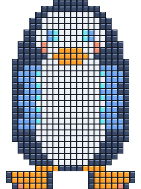
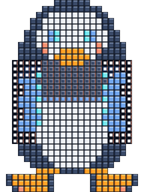

24×32 target sockets with a deterministic opening permutation. Transparent Micro geometry is kept under review until the art is approved for promotion.
546 active·75.09% locked·136 movable·shelf 16
Target and opening state

Target sockets · the final Tux silhouette. Every active coordinate is a real color-matching destination; voids remain transparent.

Opening permutation · matching gems are locked flush; inset gems with a coral edge are mismatched and movable.
locked / matched movable / mismatchedtransparent void · no socket
obsidian 166pearl 240amber 54navy 66ice 14coral 6
Micro socket / gem variants · one and two times scale